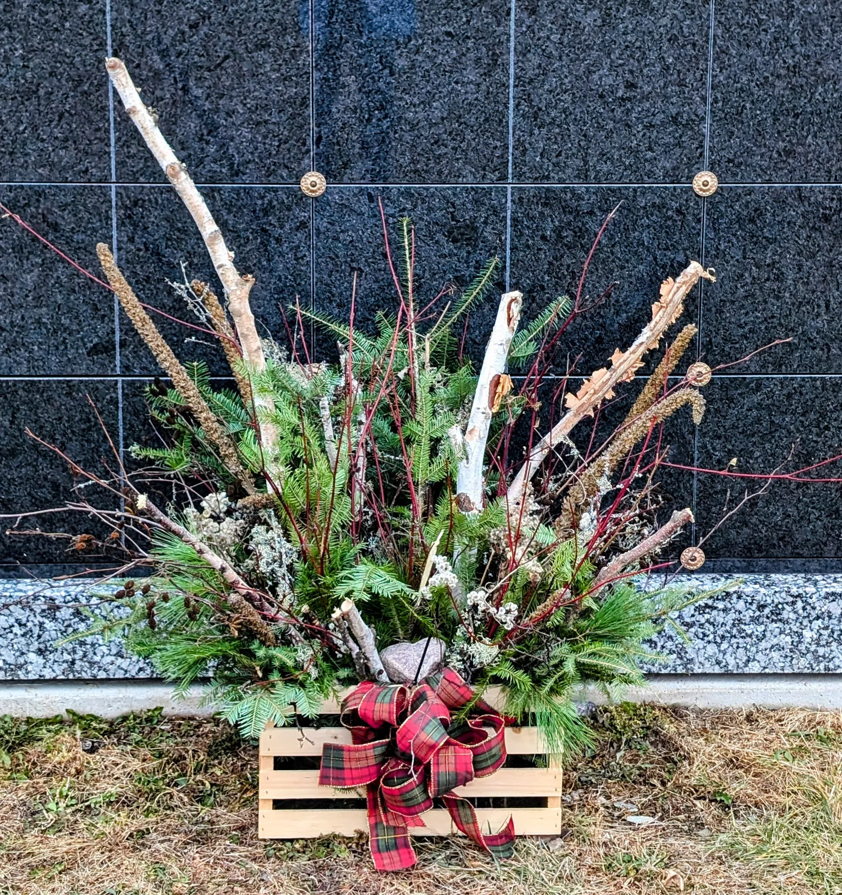

Guidance without pressure
If you know exactly what feels right or need help deciding, the studio can guide the process calmly and respectfully.
For memorial services, celebrations of life, funeral tributes, or comfort deliveries to the home, the studio offers gentle guidance and custom floral design that honors the moment.
These arrangements are never treated like routine orders. They are approached carefully, with attention to tone, timing, and the person being remembered.

Available for: standing sprays, memorial table arrangements, altar pieces, urn accents, and home comfort deliveries.
Best next step: Call if the order is time-sensitive or tied to a service window.
If you know exactly what feels right or need help deciding, the studio can guide the process calmly and respectfully.
Scale, palette, and style are shaped around the service, home, or memorial table so the flowers feel fitting and sincere.
Deliveries are coordinated carefully with venues, funeral homes, churches, or family residences when timing matters most.
Share who is being honored, the type of gathering, and whether the flowers are for a service or to comfort someone at home.
Soft and peaceful, classic and formal, or more personal and expressive — the design direction is shaped around what feels right.
Each arrangement is made to order in Fairfax with restraint, beauty, and respect guiding every decision.
Flowers are coordinated for home delivery, memorial venues, or places of worship with professionalism and sensitivity.
Not every sympathy order comes from someone attending the service in person. Sometimes the flowers are meant to quietly say “I’m thinking of you” from a distance.
Whether you’re sending support to a grieving friend, coordinating something on behalf of a group, or choosing flowers for an intimate family gathering, the studio can help shape something appropriate and meaningful.


Reach out for guidance, a custom arrangement, or a time-sensitive memorial delivery.